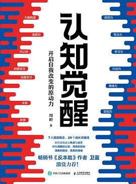
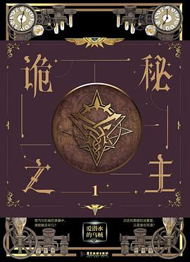
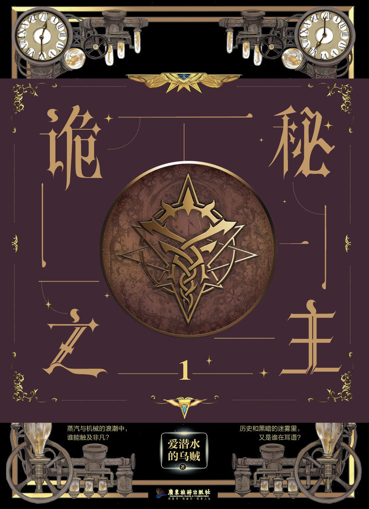
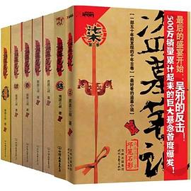
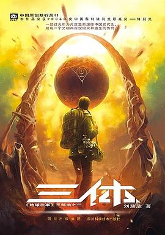
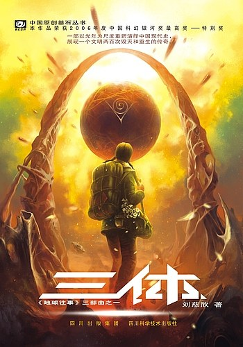
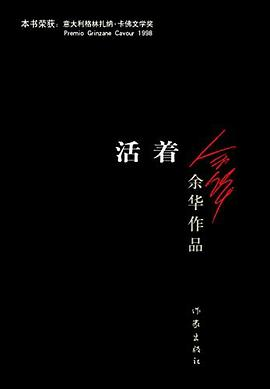
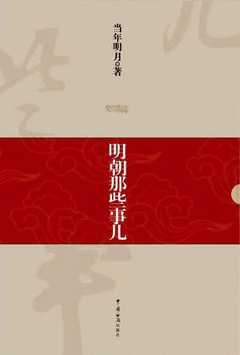

认知觉醒
像素提升 4.0×
左列是接口返回的 /s/ 小图，右列是把路径换成 /l/ 后拿到的图。
两张按相同宽度 340px 显示 —— 约等于应用首页卡片封面的实际显示尺寸（101vp × 3.5 密度 ≈ 354px）。








/s/ 统一压到 270px 宽，而卡片实际显示需要 ~354px —— 所以现在封面一定会被放大 1.3 倍，这就是"发虚"的直接原因。/l/ 返回的是出版社上传的原图，尺寸差异很大：冷门书只有 300×444，但热门书能到 1080×1461，比 /s/ 清晰近 4 倍。/l/ 是 500×500 正方形 —— 豆瓣上有些条目上传的就不是标准书封，刮削时得按长宽比过滤。